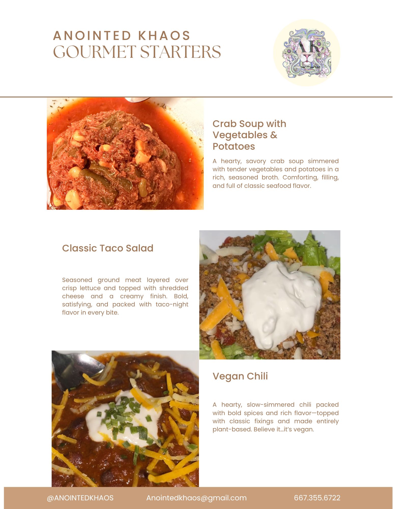

Founder & CEO
Adrienne “AK” Kelly is a Baltimore-based entrepreneur, visionary, and healer redefining the intersection of culinary art, culture, and wellness.
As Founder & CEO of Anointed Khaos: Ancestral Antidote LLC, AK blends ancestral wisdom with modern science to create elevated, intentional culinary experiences rooted in nourishment, connection, and transformation.
A proud graduate of the University of Maryland’s School of Pharmacy Master of Science in Medical Cannabis Science & Therapeutics program, she brings academic rigor to a community-centered mission—bridging education, safe access, cultural equity, and lived experience in the cannabis space.
Through Anointed Khaos, AK curates infused cuisine, signature sips, private dining, and elevated offerings designed to nourish the body, spark conversation, and create unforgettable shared moments.
Beyond entrepreneurship, she is also a writer and creative force. Her memoir, Was It All A Dream: Dreaming Wide Awake, explores grief, resilience, ancestral connection, and awakening.
Her work was recognized in Vital Magazine’s January 2026 edition, where she received the Seed-to-Success Award.

Contact Us
DM or text “A LA CARTE” to @Anointedkhaos for more info.
📞 667-355-6722
📧 Anointedkhaos@gmail.com